Royal Masala · Lappeenranta
Nauti aidosta intialaisesta ruoasta 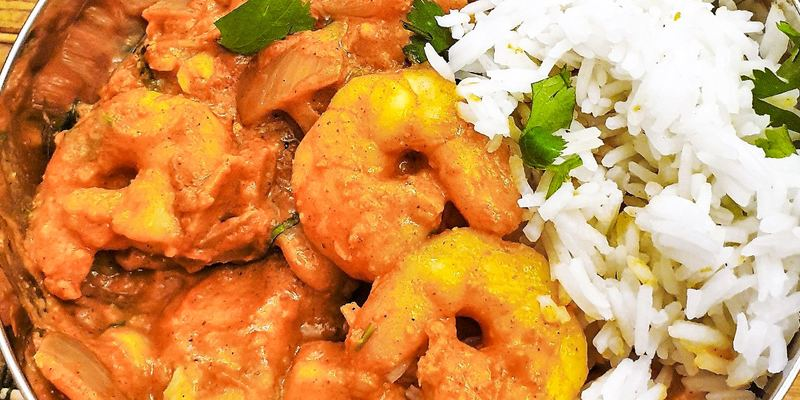

Lounasbuffet ma–pe 10:30–15:00 · 12,90€

Tänään lounas
Maanantai
Pääruoat
- CHICKEN KORMALG
- FISH CURRYLG
- CREAMY LIHAPULLATLG
- CHILI TOFULGV
Alkupalat
- KANA PAKORAL
- KASVIS PAKORAL
- MASALA PERUNALGV
Lisukkeet
- RIISI
- NAAN-LEIPÄL
- MEHUG
Hinta 12,90€Opiskelijahinta 9,90€Buffet sisältää salaatin, mehun, kahvin ja teen.
Tiistai
Pääruoat
- MALVANI CHICKENGL
- SAAG KOFTALVG
- BUTTER FISHLG
- BEEF SIZZLERLG
Alkupalat
- KESÄKURPITSA PAKORALV
- PANEER PAKORALV
- PAPADAMLGV
Lisukkeet
- RIISI
- NAAN LEIPÄL
- MANGO LASSIG
Hinta 12,90€Opiskelijahinta 9,90€Buffet sisältää salaatin, mehun, kahvin ja teen.
Keskiviikko
Pääruoat
- KANA SIPULI CURRYLG
- SAVJI SEEKLVG
- HÄRKÄ VINDALOOLG
- TONNIKALA TOMAATTILG
Alkupalat
- PERUNA PAKORALV
- KANA PAKORAL
- PANEER PAKORALGV
Lisukkeet
- RIISI
- NAAN LEIPÄL
- MAKEA LASSI
- ) , KAHVI
Hinta 12,90€Opiskelijahinta 9,90€Buffet sisältää salaatin, mehun, kahvin ja teen.
Torstai
Pääruoat
- KANA DOPEAZOLG
- LAMMAS MADRASLG
- KALA SITRUUNAALG
- LINSSI CURRYLGV
Alkupalat
- KASVIS PAKORALV
- SIPULI PAKORALV
- HOT WINGSL
Lisukkeet
- RIISI
- NAAN LEIPÄL
Hinta 12,90€Opiskelijahinta 9,90€Buffet sisältää salaatin, mehun, kahvin ja teen.
Perjantai
Pääruoat
- CHILI KANALG
- HKÄRKÄ KASMERILG
- LOHI TOMAATTILG
- GOVI MASALALGV
Alkupalat
- PAPADAMLGV
- KANA PAKORAL
- GOVI PAKORALV
Lisukkeet
- RIISI
- NAAN LEIPÄL
- BANNANI LASSIG
- ) , KAHVI
Hinta 12,90€Opiskelijahinta 9,90€Buffet sisältää salaatin, mehun, kahvin ja teen.
Lauantai
Pääruoat
- KANA SASLIKGL
- LOHI DOPEAZOLG
- LAMMAS CORIANDERILG
- PALAK PANEERLGV
Alkupalat
- KASVIS SOMOSALV
- KASVIS PAKORALV
- KANA PAKORAL
Lisukkeet
- RIISI
- NAAN LEIPÄL
- MANGO LASSIGL
Hinta 14,90€Opiskelijahinta 11,90€Buffet sisältää salaatin, mehun, kahvin ja teen.
Sunnuntai
Meillä ei ole buffet sunnuntaisin. Katso ruokalistamme.
RuokalistaRuokalista
Alkuruoat
Alkupala
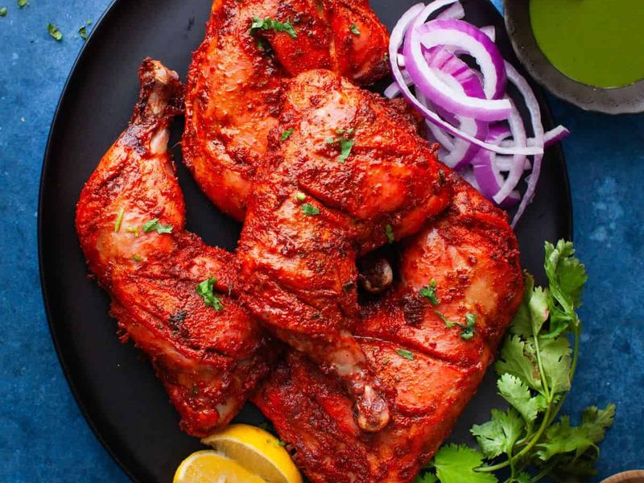
Grilliruoka
Grilliruoat
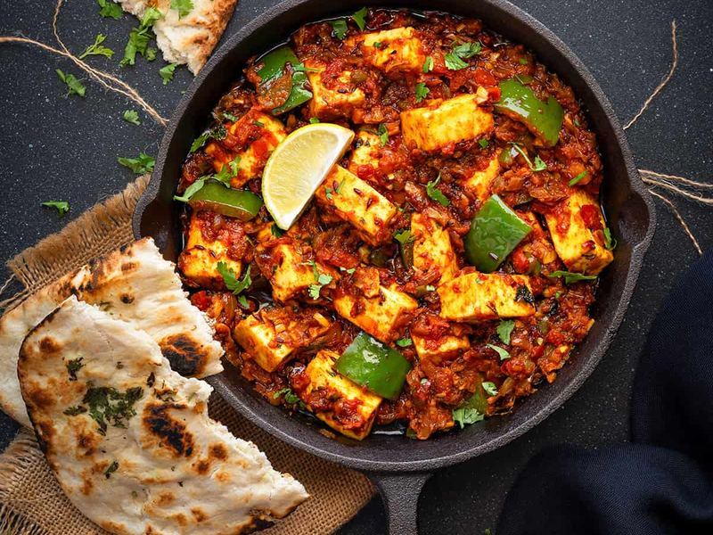
Kasvis Curry
Vegetable Curry
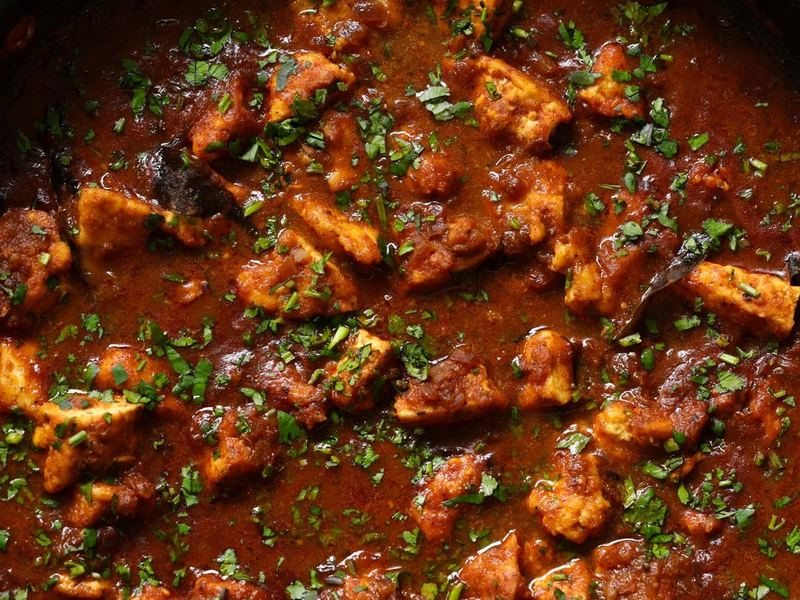
Kanaruoat
Chicken Dishes
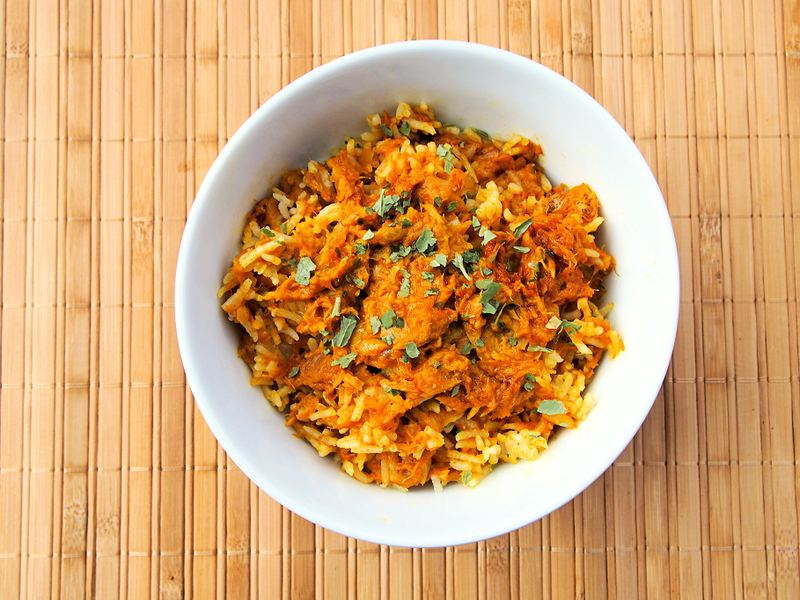
Kalaruoat
Fish & Seafood Curries
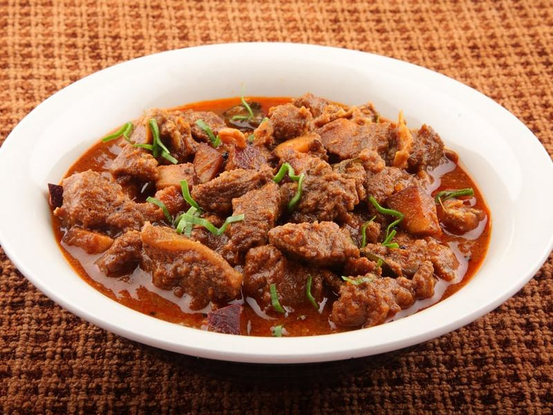
Naudanliharuoat
Beef Curries
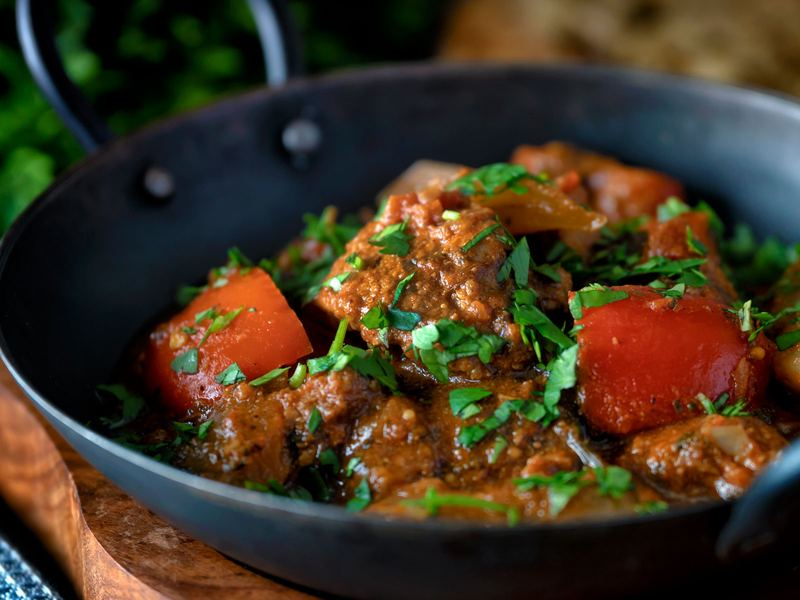
Lammasruoat
Lamb Curries
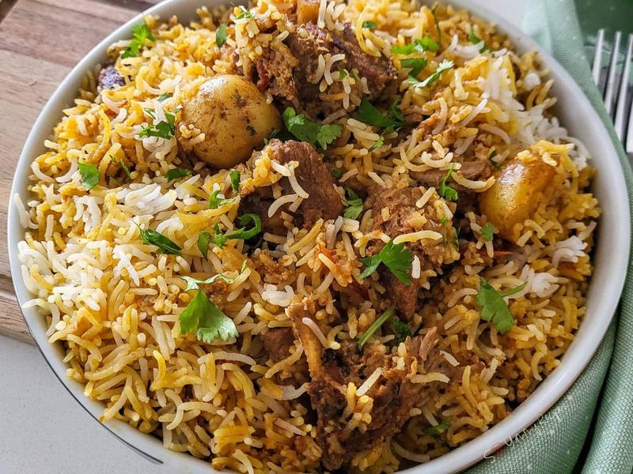
Biryani
Biryani-riisiannokset
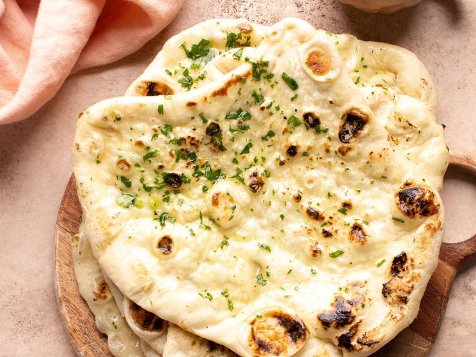
Leivät
Breads
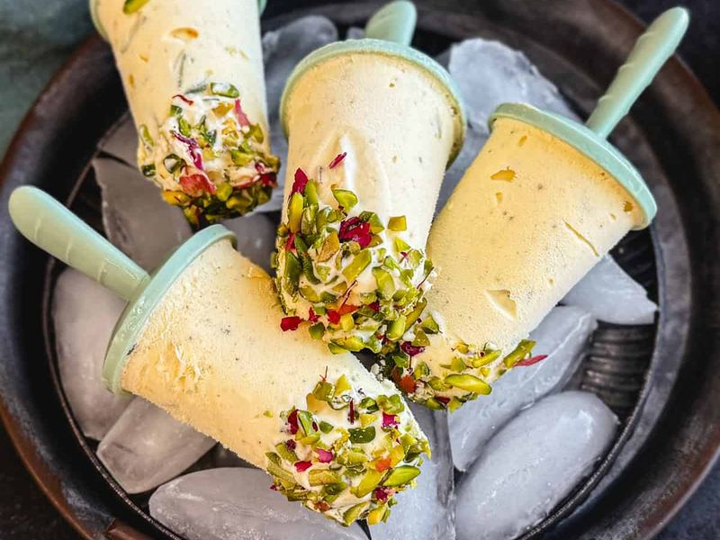
Jälkiruoat
Desserts
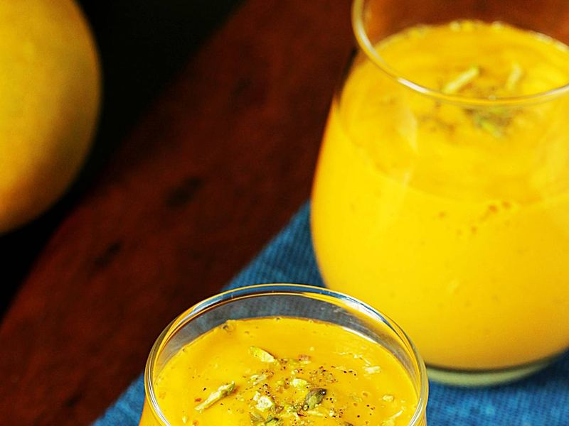
Juomat
Drinks
Ravintolamme tunnelmaa
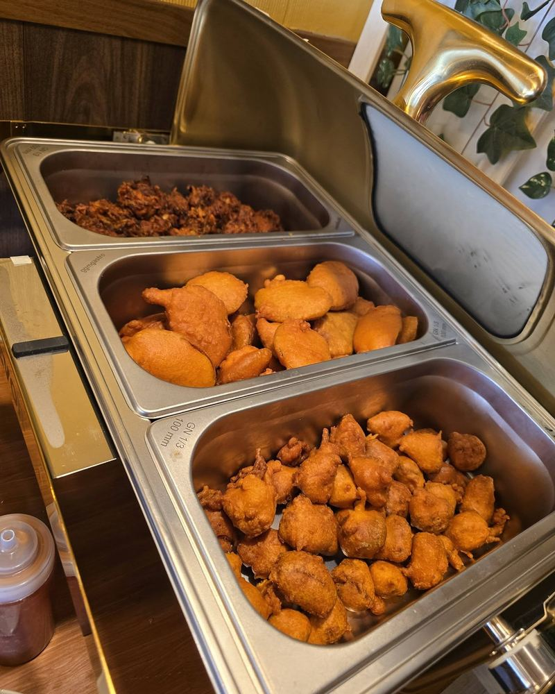
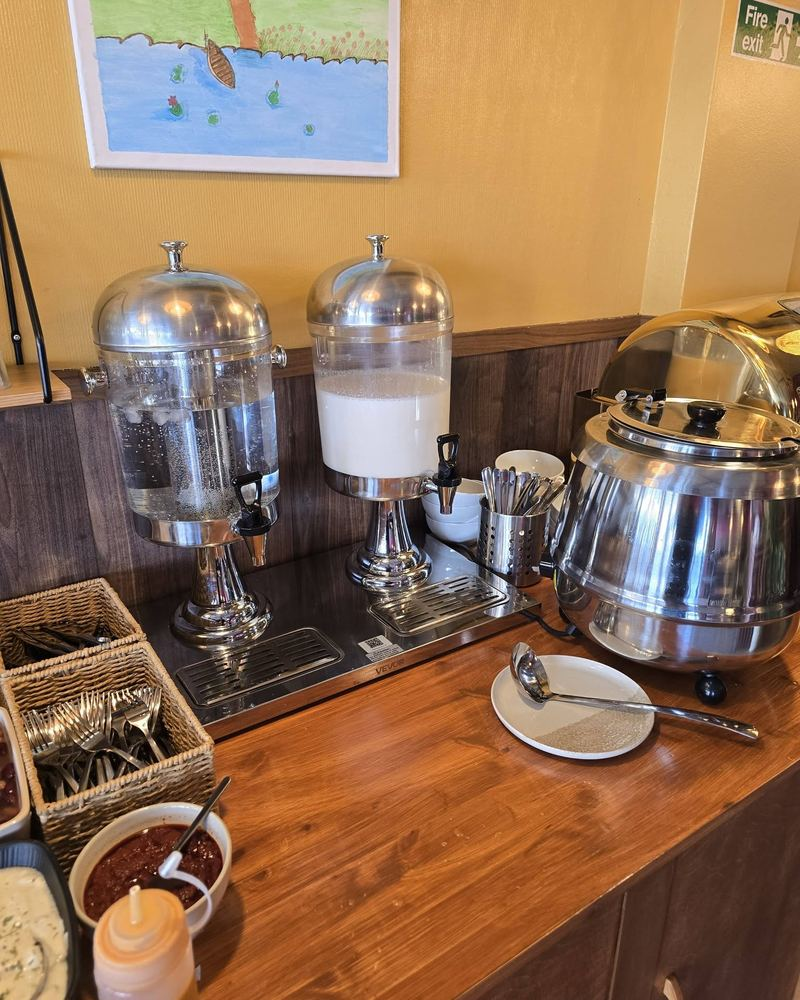
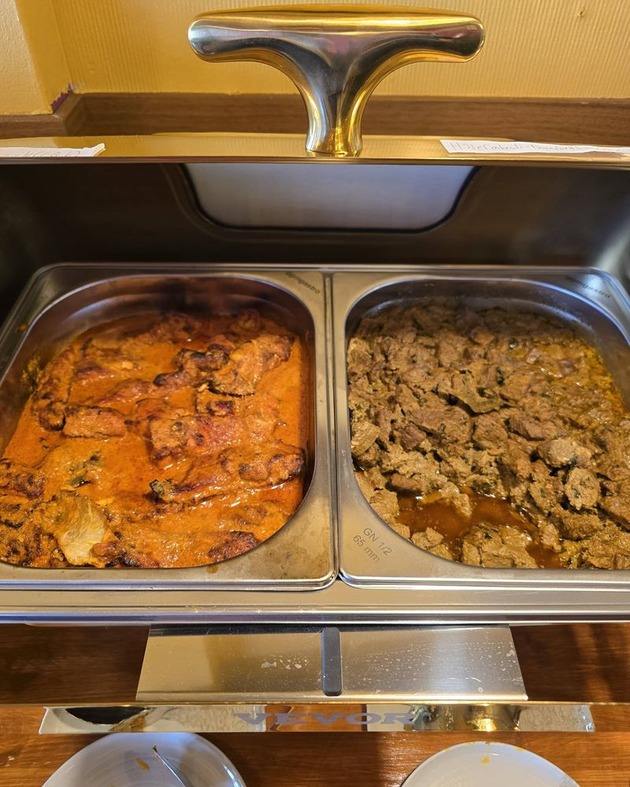
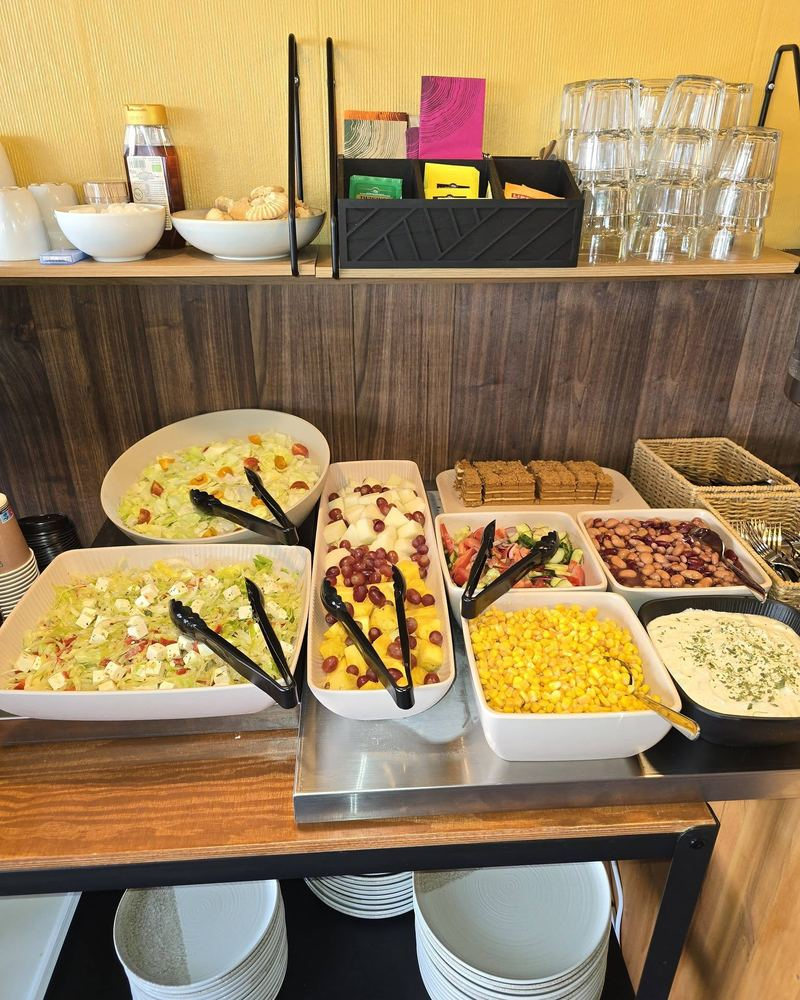

Varaa pöytä
Sijainti ja aukioloajat
Oksasenkatu 153100 Lappeenranta
| Maanantai | 10:30–21:30 |
|---|---|
| Tiistai | 10:30–21:30 |
| Keskiviikko | 10:30–21:30 |
| Torstai | 10:30–21:30 |
| Perjantai | 10:30–21:30 |
| Lauantai | 12:00–21:30 |
| Sunnuntai | 12:00–21:00 |
Royal Masala
Oksasenkatu 1, 53100 Lappeenranta